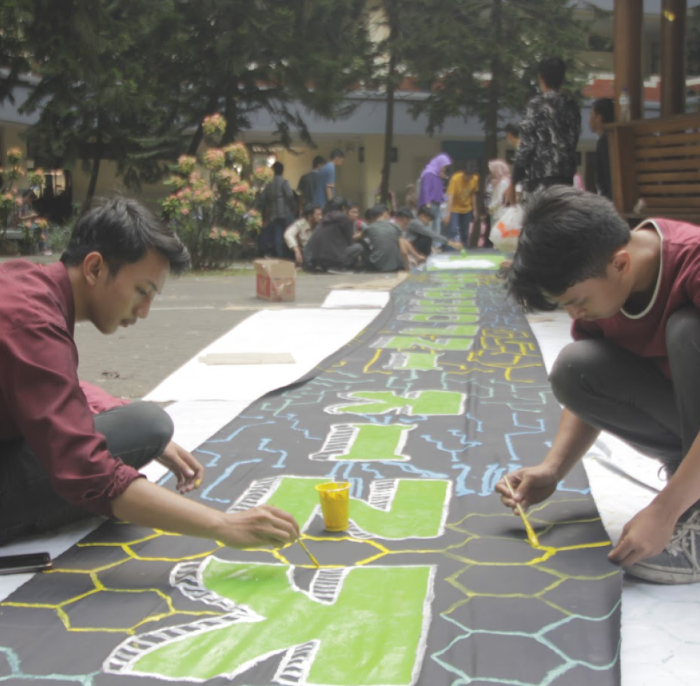
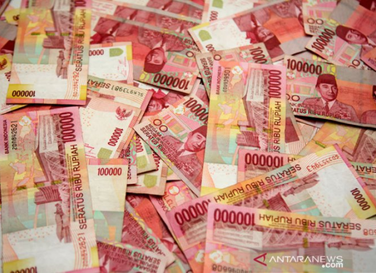
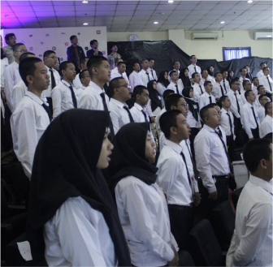
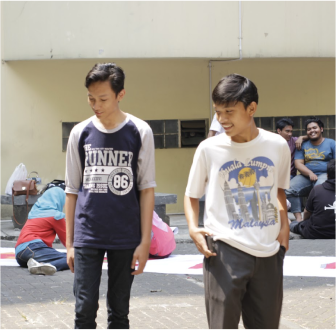
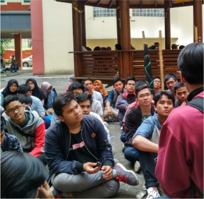
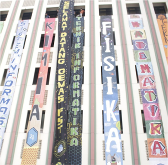

Satu Jiwa
Satu Nyawa
Informatika!
HIMTI UIN Syarif Hidayatullah Jakarta berfungsi sebagai penyelenggara kegiatan untuk kemahasiswaan, penalaran, dan keilmuan di bidang teknologi informasi.
Informasi Penting
Open Recruitment Panitia PBAK Jurusan 2022
29 Juli 2022

Prosedur Cicilan UKT Mahasiswa Fakultas Sains dan Teknologi
29 Juli 2022

Blog
7 Keunikan Metaverse, nomor 6 bikin kaget
29 Juli 2022
Fauzan Farhan Antoro sang master dan 5 keunikan tentangnya
29 Juli 2022
Prosedur Cicilan UKT Mahasiswa Fakultas Sains dan Teknologi
29 Juli 2022
Fauzan Farhan Antoro sang master dan 5 keunikan tentangnya
29 Juli 2022
Gallery




Apa itu HIMTI UIN Jakarta?
HIMTI UIN Syarif Hidayatullah Jakarta merupakan wadah silaturahmi dan pemersatu antar Mahasiswa dengan Alumni Program Studi Teknik Informatika UIN Syarif Hidayatullah Jakarta, serta berfungsi sebagai penyelenggara kegiatan untuk kemahasiswaan, penalaran, dan keilmuan di bidang teknologi informasi.
Visi dan Misi
Visi
Terwujudnya HIMTI UIN Jakarta yang dinamis dan aktif dalam fungsi internal dan eksternal dengan berlandaskan semangat solidaritas dan profesionalitas dalam menuju himpunan yang harmoni.
Terwujudnya HIMTI UIN Jakarta yang dinamis dan aktif dalam fungsi internal dan eksternal dengan berlandaskan semangat solidaritas dan profesionalitas dalam menuju himpunan yang harmoni.
Misi
Meningkatkan peran proaktif Mahasiswa TI dalam aktivitas organisasi, profesi, maupun minat dan bakat.
Menjadikan HIMTI UIN Jakarta sebagai wadah sekunder bagi Mahasiswa TI dalam mengembangkan kemampuan akademis maupun non-akademis.
Meningkatkan hubungan persaudaraan antar Mahasiswa TI melalui semangat solidaritas dan profesionalitas